git教程
Git介绍
-
git是分布式版本控制工具，可以快速高效管理项目代码。git有廉价本地库、方便暂存区。
-
版本控制是一种记录文件内容变化以方便历史查阅、修订的系统。
-
版本控制目的：从个人开发过渡到团队协作开发
-
集中式版本控制工具svn
一台单一集中管理服务器保存所有修订版本，团队人员通过客户端连接这台服务器，取出最新的版本作修改并提交更新。优点：1、看到其他人在干什么，2、权限管控，3、管理轻松。缺点：1、服务器单点故障，2、无法协同。
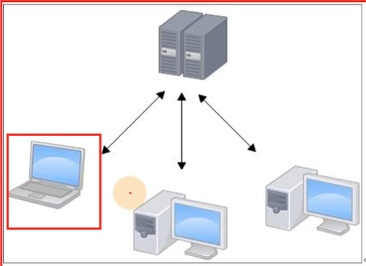
-
分布式版本控制工具
- 每个人在自己的电脑上维护版本，并有一个远程库用来推送和拉取最新版本
- 每个客户端都有完整的包含历史记录的代码
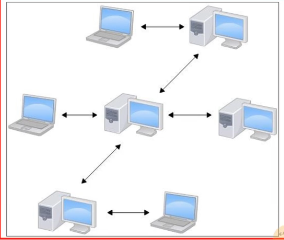
-
git工作机制
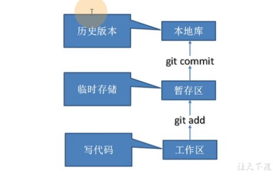
- 工作区：代码存放的目录位置，可以删除，无法追溯。
- 暂存区：工作区的文件添加到临时存储区间，可以删除，无法追溯。
- 本地库：暂存区的代码提交到本地库后生成历史版本，代码就可以被追溯了，再也删不掉了。
- 历史版本是无法单独删除的，除非删除本地库。
-
代码托管中心（远程库）
远程库：本地库可以推送到远程库，网络中的所有用户都可使用。
git安装
git命令
-
设置用户名签名，作用：区分不同操作者身份，注：用户签名和github的账号没有任何关系
git config --global user.name
git config --global user.email -
初始化本地库：获取本地库的管理权，会生成.git目录，不要修改该目录
git init -
查看本地库状态: 显示分支，提交|没有提交的记录，未被追踪的记录｜追踪到的记录(需要被add)
git status -
添加到暂存区
git add *|<file> -
从暂存区删除文件
git rm --cached <file> -
提交本地库：显示新增和删除行信息，git安行管理
git commit -m “<日志信息>” <file>
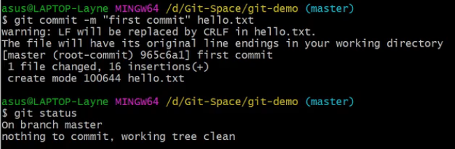
-
查看日志: 显示版本号，签名，日期, head指针指向哪个版本哪个版本就是当前版本
git log
git reflog
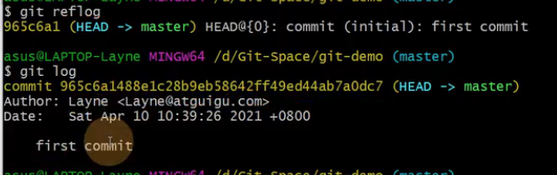
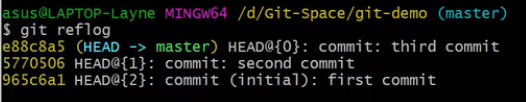
历史版本
- 版本穿梭：移动head指针
git reset --hard 版本号
git分支
分支特性
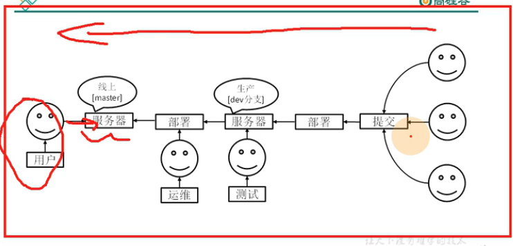
版本控制过程中同时推进多个任务，每个任务相互独立，将自己的工作从主线上分离开来，开发自己的分支不影响主线分支运行，底层实现也是指针。
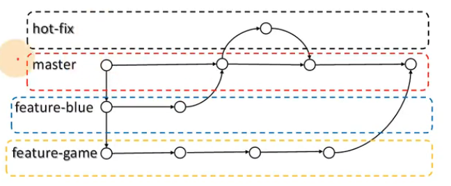
分支创建、分支转换、分支合并
- 创建分支
git branch 分支名 - 查看分支
git branch -v
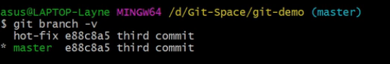
- 切换分支
git checkout 分支名 - 把指定分支合并到当前分支上， 如果当前分支发生改动则会出现分支冲突
git merge 分支名
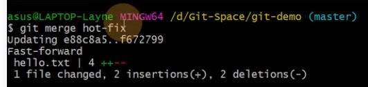
代码合并冲突解决(团队协作机制)
合并分支时，两个分支在同一个文件的同一个位置有两套完全不同的修改（即同一个位置内容不一样）。git无法决定使用哪一个，需人工决定。
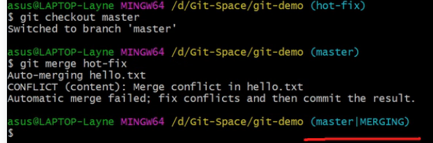
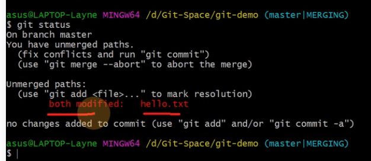
手动vim修改冲突文件，三个特殊符号：
1 | <<<<HEAD |
根据需求修改当前分支代码和另一个分支的代码，保存修改后的代码，之后git add和git commit，注：git commit时不能再带文件名了否则报错
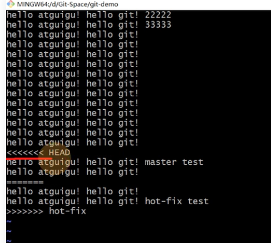
-
底层逻辑：head文件指向分支文件，分支文件指向版本号文件
-
团队内协作
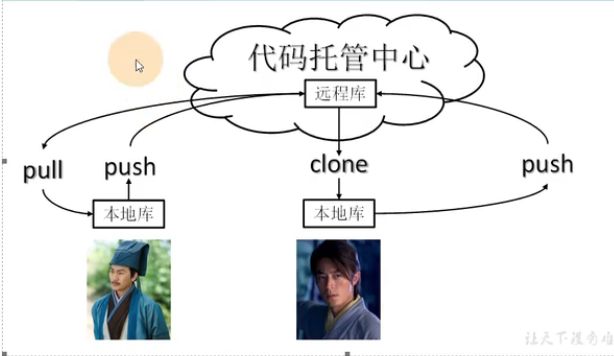
-
跨团对协作
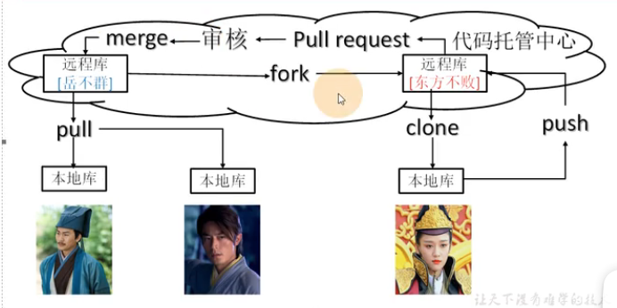
Idea集成开发git
github（国外）
创建远程库
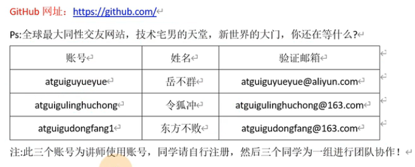
new repository->repository name->权限public|private
远程库链接：http|ssh用于推送和拉取库，链接太长起别名
- 查看当前所有远程地址别名
git remote -v - 起别名：别名最好和库名一致，默认clone建的别名是origin
git remote add 别名 远程地址
代码推送push
- 推送本地分支上的内容到远程仓库
git push 别名 分支名
登录方式：1、口令，2、浏览器账号 - 推送时需要让团队库赋权限
- 团队：repository->settings->manage access->invite a collaborator->生成邀请函pending invite->发送邀请函给待邀请的成员
- 待邀请成员：访问邀请函->接受或拒绝->可以看到团队的项目了
代码拉取pull
将远程仓库对于分支最新的内容拉下来后与当前本地分支直接合并
git pull 远程库地址别名 远程分支名
代码克隆clone
将远程仓库的内容克隆到本地，克隆不需要登录账号的，克隆完成三件任务：1、拉取代码，2、初始化本地仓库，3、创建别名origin
git clone 远程地址
跨团队协作
- 团队1:
- github上左上角搜项目或账号/项目
- 右上角fork，自己账号有了一个别人账号的项目
- Pull requests->new pull request->create pull request->可以相互评论
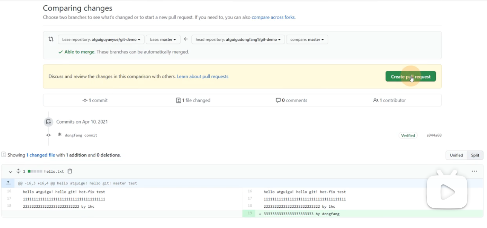
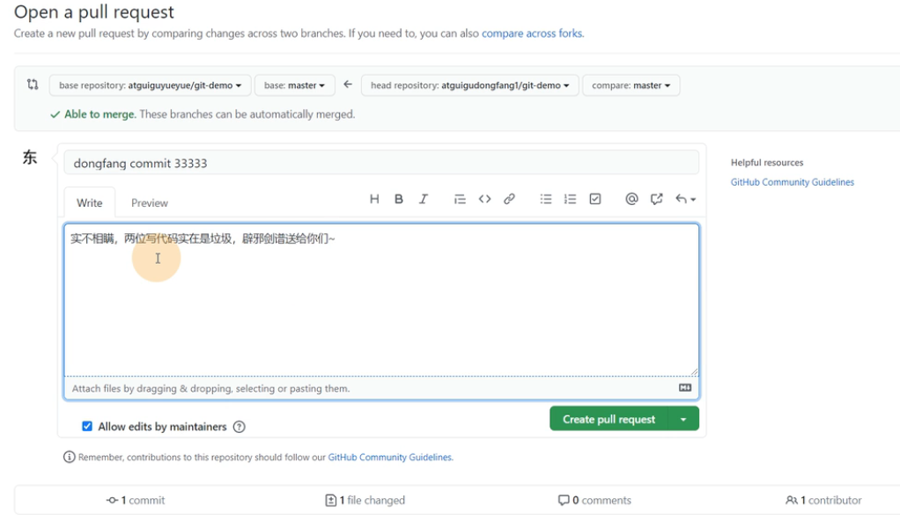
- 团队2:
- Pull requests->点击链接文件->查看修改的代码->有疑问可以评论->确认别人的修改->merge pull request
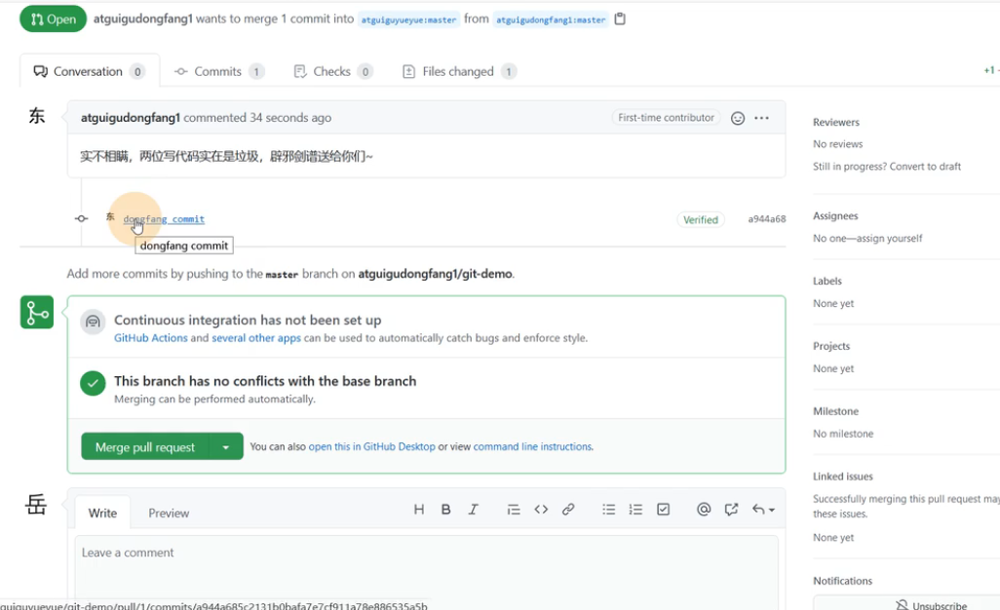
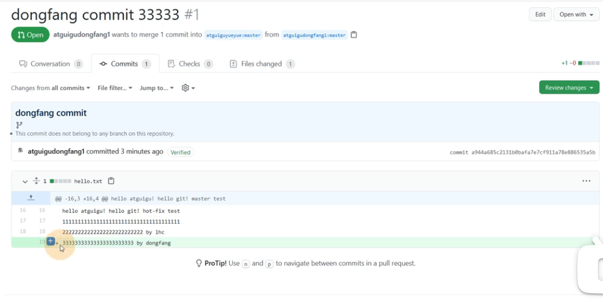
- Pull requests->点击链接文件->查看修改的代码->有疑问可以评论->确认别人的修改->merge pull request
ssh免密登录
没有创建.ssh目录无法使用ssh链接
- 生成.ssh， -t指定加密算法， -C描述账户
ssh-keygen -t rsa -C github账户 - 在.ssh中找公钥*.pub，复制内容，添加到github的SSH and GPG keys中
- git pull ssh链接 分支名 或git push ssh链接 分支名